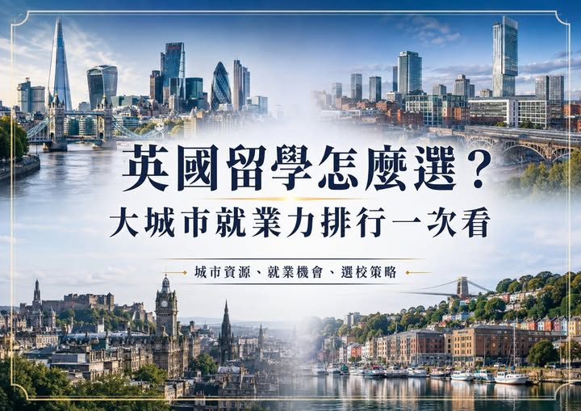

《看懂制度，選對世界》第一集
英國留學怎麼選？排名高，不代表畢業後工作機會一定多
英國留學怎麼選？排名高，不代表畢業後工作機會一定多！ 不少人選英國大學時，第一眼先看世界排名。 但有一個問題常被忽略：

英國留學怎麼選？排名高，不代表畢業後工作機會一定多！ 不少人選英國大學時，第一眼先看世界排名。 但有一個問題常被忽略：
不少人選英國大學時，第一眼先看世界排名。但有一個問題常被忽略： 如果把「 London 倫敦 英國企業總部、金融、法律、顧問、科技、媒體與時尚產業最集中的城市。倫敦生活費高、競爭也強，但對希望進入跨國企業及專業服務業的學生而言，能接觸到的企業活動、校友資源和學期中實習機會，仍是其他城市難以取代的。Manchester 曼徹斯特 英格蘭北部最重要的大型就業中心之一。科技、媒體、金融、商業、數位產業與創意產業發展完整，生活費通常低於倫敦。對希望兼顧大城市生活與留學預算的學生，是相當有吸引力的選擇。
布里斯托 布里斯托的優勢在航太、工程、科技、創意媒體與永續產業。城市規模適中，就業表現良好，又擁有 University of Bristol 與 UWE Bristol 等大型大學。學生能同時取得校園資源與城市企業機會，是近年很受重視的英國留學城市。愛丁堡 蘇格蘭重要的金融、科技、政府與專業服務中心。城市規模雖不如倫敦，居民就業率卻相當突出。對金融、資訊科技、商管與公共政策相關科系學生而言，具有很好的產業條件。里茲 里茲是英格蘭北部重要的金融、法律、醫療與商業服務中心。
大型企業職缺多，生活成本通常比倫敦容易負擔，適合商管、金融、法律、醫療及數據相關領域。伯明罕 英國第二大城市之一，工程、製造、金融、公共服務與商業活動規模龐大。當地工作機會多，但不同區域的發展差距較大。學生選校時，應同時查看課程是否提供 placement year，以及大學與企業的合作情況。Glasgow、Liverpool、Cardiff、Nottingham、Sheffield 這些城市都是重要的大學城，也各自擁有特定產業優勢。
Glasgow適合工程、金融與創意產業；Liverpool在醫療、生命科學與物流方面具有發展；Cardiff集中媒體、政府與公共服務；Nottingham偏向生命科學、醫療及金融後勤；Sheffield則以工程、先進製造與醫療研究受到重視。選英國大學，不能只看城市就業率。有些小城市居民就業率很高，但專業職缺數量有限；有些大型城市整體就業率未必突出，卻集中了大量高薪與國際企業職位。
城市有沒有符合科系的產業 大學是否提供實習年 當地是否有跨國企業與專業職缺 課程是否累積作品、證照與工作經驗 畢業後想留在英國，還是回台灣發展 Peter觀點 學校排名決定履歷上的大學品牌；城市位置則影響學生在留學期間能接觸多少企業、活動與職涯機會。如果學生讀金融、法律、媒體、顧問或時尚，城市的重要性會更高。如果學生讀工程、電腦、科學或研究型科系，科系實力、設備、實習制度與企業合作，通常比城市知名度更值得優先考慮。最適合的選擇，不一定是排名最高的學校，也不一定是人口最多的城市。
應該選擇一個能讓大學品牌、科系實力、城市產業與家庭預算互相配合的方案。